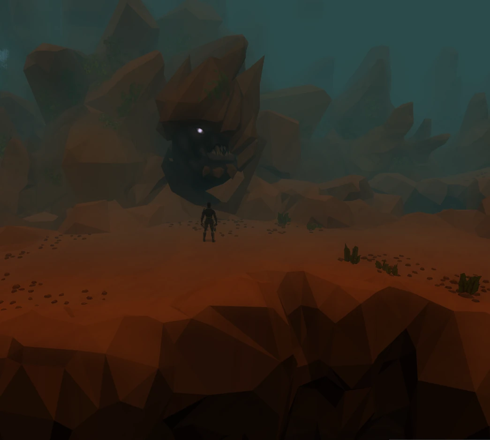
Combat
Fight the bosses you came back for.
Take on Araxxor, Vorago, and the Barrows brothers in Rise of the Six.
Read the boss guides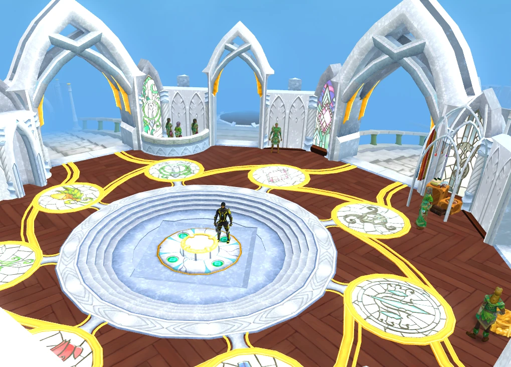
An RS3 restoration project
Take on familiar bosses, train a companion with its own skill tree, and explore a world built around the way you like to play.
The world
Pick your difficulty, find your next destination in the Atlas, and build a character and companion that fit how you play.

Combat
Take on Araxxor, Vorago, and the Barrows brothers in Rise of the Six.
Read the boss guides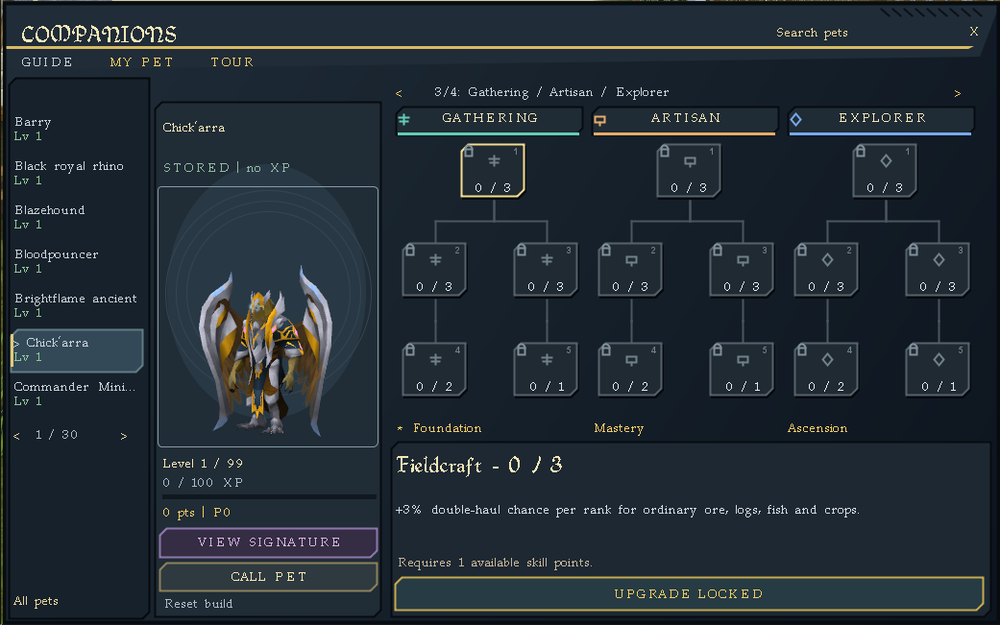
Companions
Train the pet following you, invest in a mix of perk branches, and prestige to unlock Ascension. Pets can follow alongside a Summoning familiar.
Read the companion guideFrom the field


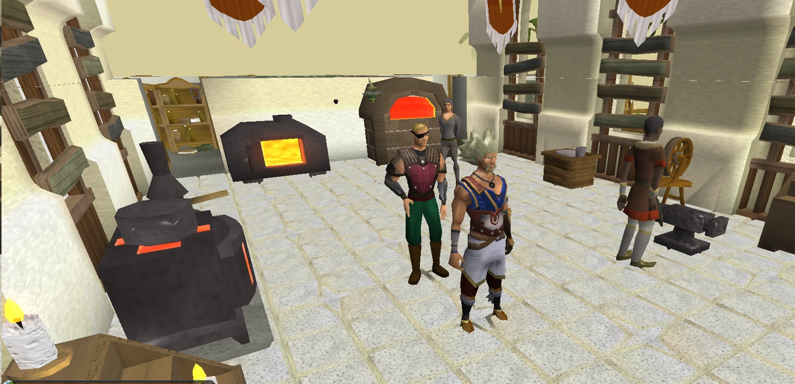

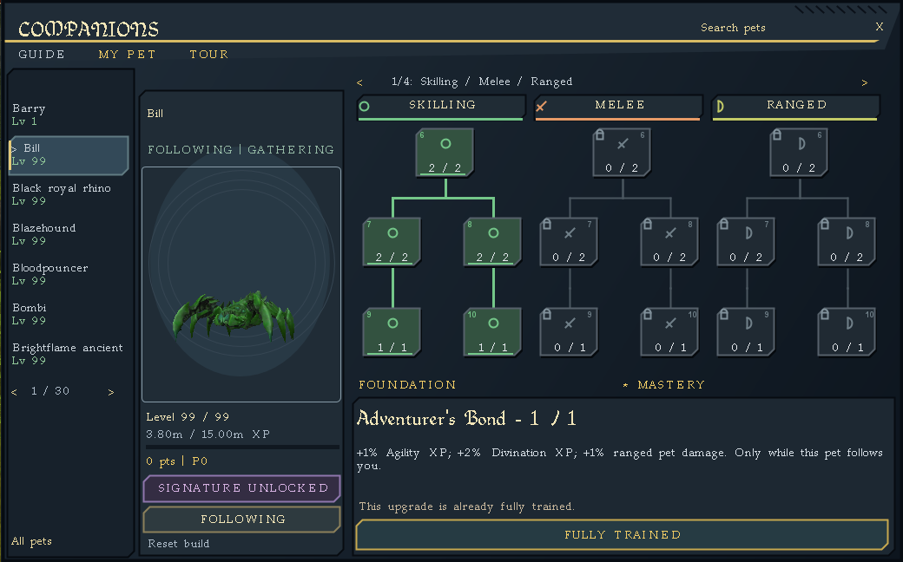
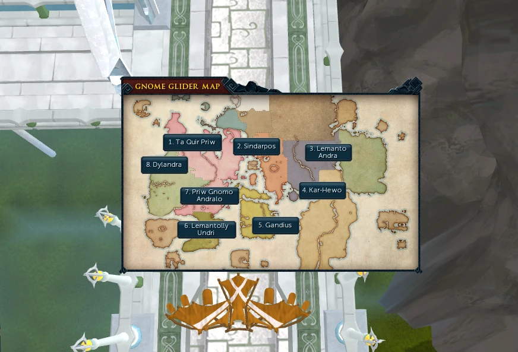
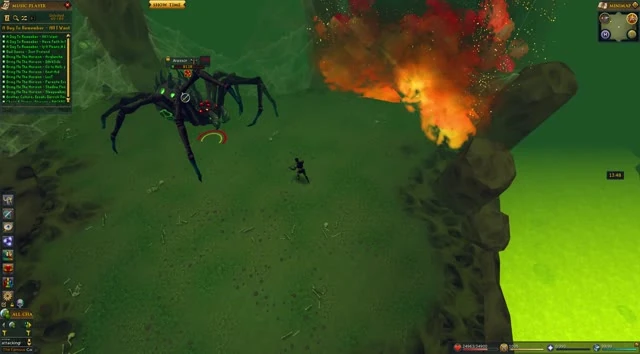
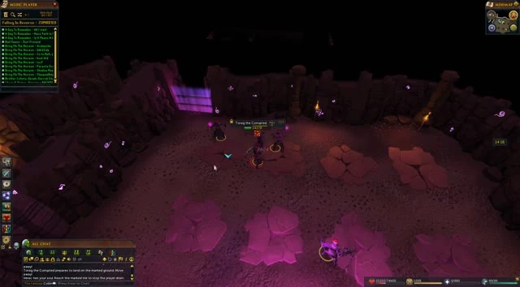
Field tools
Look up a drop, choose a training route, or find the first step of a quest before you head out.
Getting started
Install 64-bit Java 8 for Windows first. Then download and open the launcher JAR and select Update and play. Your first launch can take a little longer while the game loads its cache.
AetherRS3 is an unofficial, independently operated private server. RuneScape and its original game assets and trademarks belong to Jagex Limited.
Reclaim your Ironman starter kit with ;;ironkit.
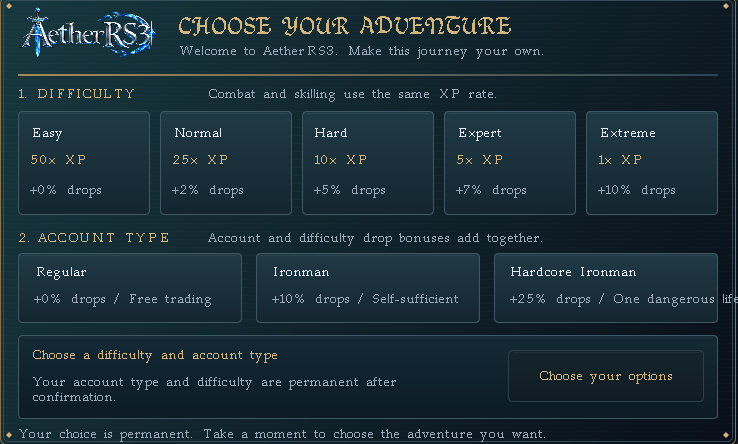
Keep these handy
;;loot;;commands;;ref nsgPatch notes
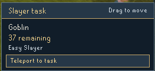
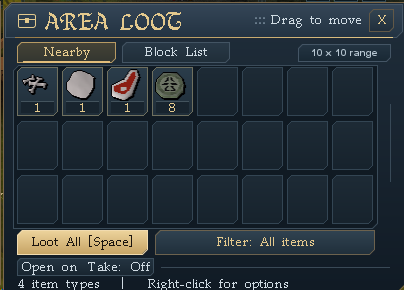
;;ironkit for reclaimable level-one gear on eligible accounts.Supporter guide
Existing members can use ;;dz and speak to the guide for supplies, a tour, and perks for their current rank.
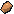
Zone access with bank chests, a supplies counter, Cavefish and Rocktail shoals, workshop services, and skilling shortcuts. Up to 150 red sandstone per cooldown.
Keep mining when a Shooting Star changes layers. Eligible bird’s nests go to your bank when there’s room. Up to 225 red sandstone per cooldown.
Workshop supplies use in-game coins. Fishing, crafting, and other activities keep their usual requirements.